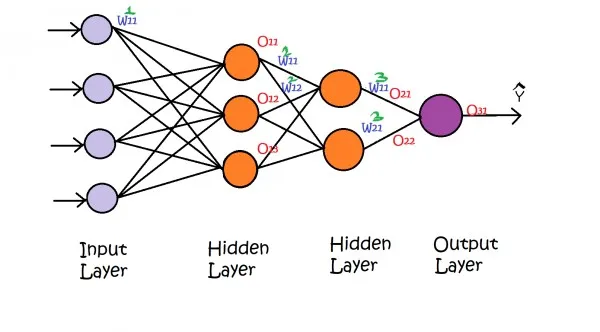
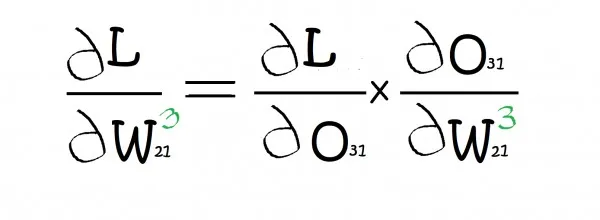

What is Derivative ?
Derivative is nothing but Rate of change of one quantity over another(at a given point).
Derivatives represent a slope on a curve, they can be used to find maxima and minima of functions, when the slope, is zero. Also, the derivative measures the steepness of the graph of a function at some particular point on the graph.
Partial derivative is Rate of change of one quantity over another, irrespective of another quantity , if more than two factors are in equation.
What is the Chain Rule?
The chain rule of differentiation is the most fundamental thing in back propagation.
In back propagation we update the weights as we go back so as to reduce the loss function. Our main aim is to get the predicted value closer to the actual value .
This is a multilayer neural network having two hidden layers between input and output layer. The w11 with suffix 1 represents weight of first first input feature for first neuron of hidden layer 1. Similarly, w11 with suffix 2 represents weights for hidden layer 2.
As we know that, the new weights are updated As old weight minus learning rate multiplied by derivative of loss with respect to old weight.
we know the old weight and learning rate. But, now we have to find the derivative of loss function with respect to old weight. So, let us say we want to know the derivative of loss w.r.t w21(3) with suffix 3.
Here, the W21 of third layer is impacted by output of output layer i.e., O31. Therefore, we multiply derivate of loss w.r.t O31 with derivative of O31 w.r.t derivative of W21(3).